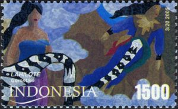

Wahai Para Guru: Hak Cipta Penting Bagi Anda
Tulisan ini adalah bagian pertama dari serial pendidikan dan hak cipta yang dibuat oleh Lisette Kalshoven. Di samping pemikiran-pemikiran tentang bagaimana kita seharusnya mengatur hak cipta dan pendidikan di abad 21, juga ditulis tentang tips praktis untuk para guru dalam menghadapi pembatasan-pembatasan yang dibuat oleh hak cipta.
Pendidikan telah berubah

{kind=link}
Teknik pendidikan klasik dimana guru masuk ke ruang kelas dan meminta agar murid membuka halaman tertentu dari pembahasan pada hari sebelumnya mungkin akan menjadi usang dengan cepat. Teknik pendidikan kini mengarah pada mencari pola “pembelajaran yang berkelanjutan”, dimana kegiatan belajar mengajar dilakukan di luar ruang kelasm menggunakan internet. Dengan internet, kesempatan belajar dapat lebih merata, namun beberapa peraturan yang menjadi payung hukum aktifitas pendidikan belum bisa menyamai kecepatan perkembangan pendidikan modern. Salah satunya adalah kesadaran akan hak cipta. Untuk guru guru yang sadar hak cipta, mereka membuat Open Educational Resources (Sumber Bahan Pendidikan Terbuka), dikarenakan berbagai hal:
Para guru ingin dapat untuk menggunakan bahan ajar yang mereka butuhkan
Apabila Anda ingin memutar film di luar ruang kelas (untuk mengisi kegiatan extra kurikuler seusai sekolah misalnya), masih belum jelas apakah guru dapat melakukannya tanpa izin khusus dari pemegang hak cipta atas film tersebut. Bahkan jika izin dari pemegang hak diurus oleh guru, hal ini akan membebani guru dengan biaya yang tidak murah, menghabiskan waktu, dan membingungkan para guru yang tidak paham cara membaca lisensi.
Para guru ingin dapat membagi bahan ajar kepada murid-muridnya
Perubahan pada dunia pendidikan mendorong para guru untuk mengajar dengan cara modern, tetapi jika seorang guru ingin membagikan materi ajar yang dibuatnya, atau tugas buatan muridnya, ketidakpastian hukum dapat menjadi penghambat ketika diperlukan penjelasan tentang hak-hak yang lahir dari materi yang dibagikan tersebut dan sengketa bisa dengan mudah terjadi apabila hal ini dipersoalkan ke pengadilan.
Para guru ingin dapat menggunakan keahlian dari rekan-rekannya dari seluruh dunia
Para guru saling belajar dari satu sama lain. Mulai dari metode ajar, bahan ajar, atau yang paling sederhana: pengalaman. Kegiatan saling berbagi bahan ajar dapat berubah menjadi mimpi buruk jika tidak ada kepastian hukum. Paling tidak harus ada payung hukum, atau setidaknya informasi, yang memberi kejelasan posisi hukum terhadap aktivitas berbagi bahan ajar tersebut.
Indonesia telah memfasilitasi penggunaan konten di internet dengan peraturan Pembatasan Hak Cipta di pasal 43 huruf d, asal tidak digunakan untuk kepentingan komersial. Peraturan ini juga diikuti dengan ketentuan yang ada di pasal 44 yang memperbolehkan penggunaan konten oleh para guru tanpa harus meminta izin langsung dari Pencipta.
Hak cipta adalah hal yang akan selalu ditemui para guru setiap hari. Kebanyakan konten yang dapat dijumpai di internet adalah konten yang dilindungi hak cipta. Sebagian besar bahan ajar adalah konten yang dilindungi oleh hak cipta, dan hampir setiap bahan ajar yang dibuat oleh guru memiliki ketentuan-ketentuan yang membatasi aktivitas berbagi. Tiga tindakan yang disebutkan di atas, menggunakan bahan ajar, membagi bahan ajar, dan menggunakan keahlian dari rekan sesama guru (sudah diwujudkan) sulit untuk dilakukan tanpa melanggar hukum, ketika semua guru menerapkan pendidikan modern dan ingin dapat menghasilkan inovasi.
Bagaimana anda dapat menggunakan materi ajar tanpa melanggar hukum?
Ada beberapa cara yang dapat anda lakukan untuk menggunakan materi berhak cipta:
Pertama anda bisa mendapatkan izin dari pemegang hak (pencipta). Izin ini biasanya dituangkan dalam bentuk lisensi. Anda dapat memeperoleh lisensi tersebut dari pemegang hak ciptanya atau mungkin dari penciptanya secara langsung. Apabila Anda enggan meminta ijin, disarankan untuk mencari bahan dari pencipta yang menggunakan lisensi Creative Commons.

Cara kedua adalah memahami aturan tentang Pembatasan Hak Cipta yang ada di wilayah hukum anda. Pembatasan Hak Cipta adalah setiap pengecualian dan pembatasan penggunaan konten yang dilindungi hak cipta. Sebagai contoh, Anda diperbolehkan untuk memperkuat pendapat anda pada sebuah artikel, dengan mengutip sebagian kecil dari suatu karya, tanpa meminta izin sebelumnya. Contoh ini sering dilakukan pada resensi buku. Peresensi biasanya berusaha menjelaskan suatu gaya kepenulisan dengan mengutip tiga kalimat sebagai contoh.
Pilihan terakhir, dan yang paling umum dilakukan oleh guru adalah cara mudah memutuskan untuk tidak menghormati hak cipta, dan berharap tidak dituntut.
Tentang pengecualian dalam penggunaan untuk kepentingan pendidikan, masih menjadi hal yang tidak jelas apakah bisa diterapkan di ranah digital, atau kita dapat berasumsi bahwa tidak bisa diterapkan. Yang berarti bahwa kebebasan para guru di dalam ruang kelas berakhir ketika mereka mengirimkan tugas kepada murid-murid, atau ketika mereka mau menggunakan artikel koran yang mereka temukan di internet. Ini adalah sesuatu yang akan membatasi pendidikan di dunia maya, karena para guru harus dengan aktif memperhitungkan pembayaran biaya lisensi kepada organisasi-organisasi atas ciptaan mereka, meluangkan waktu mencari materi yang dapat digunakan kembali (Open Educational Resources) atau tidak menggunakan materi yang mereka rasa paling baik dalam upaya mengedukasi. Pilihan terakhir, dan yang paling umum dilakukan oleh guru adalah cara mudah memutuskan untuk tidak menghormati hukum, dan berharap tidak dituntut.
Menjauhkan praktik kaku hak cipta dari ruang kelas
Apa yang kita butuhkan dari hak cipta untuk para guru adalah proses pendidikan dengan ketentuan pembatasan hak cipta yang jelas dan pedoman yang ketat, serta peraturan yang mengakomodasi penggunaan bahan ajar yang ada di internet. Sebenarnya, Indonesia telah memfasilitasi penggunaan konten di internet dengan peraturan Pembatasan Hak Cipta di pasal 43 huruf d, asal tidak digunakan untuk kepentingan komersial. Peraturan ini juga diikuti dengan ketentuan yang ada di pasal 44 yang memperbolehkan penggunaan konten oleh para guru tanpa harus meminta izin langsung dari Pencipta.
Wahai para guru, hak cipta penting bagi anda, karena dengan banyaknya jumlah guru yang menerapkan pendidikan modern, dan berupaya membuat inovasi, keleluasaan dari sistem-sistem hak cipta yang kaku dapat dijauhkan dari praktik belajar mengajar di ruang kelas.
Artikel ini adalah versi terjemahan yang telah disesuaikan dengan konteks Indonesia dari artikel berjudul: “Dear teacher: copyright concerns you” oleh Lisette Kalshoven
Tags:
Oleh: Hilman Fathoni
12 Jun 2016Kategori:
Berita Terbaru
- Lokakarya Hak Cipta dan Lisensi Creative Commons di Pekanbaru
- Pengumuman Resmi: Hasil Akhir Training of Trainers Creative Commons Indonesia
- Literatur tentang Model Bisnis Terbuka "Made With CC"
- Data dan Artikel Ilmiah Terbuka dari PLOS!
- Konten Format Model 3 Dimensi Berilsensi CC di Platform Sketchfab